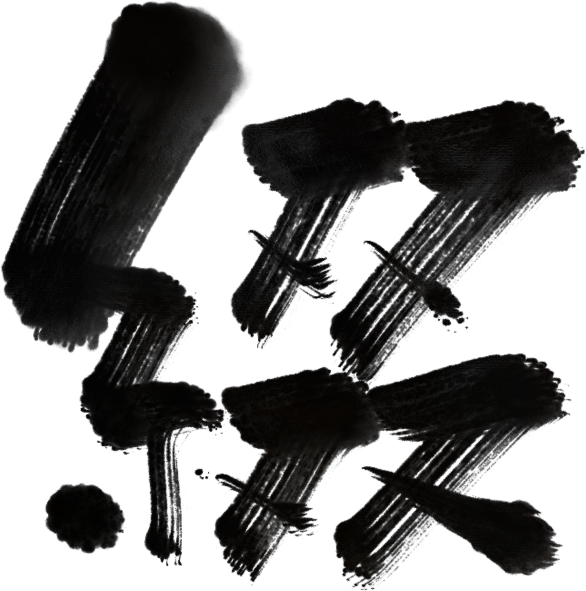

まさか、自分でホームページを作ることになるとは
まさか、自分でホームページを作ることになるとは思っていなかった。 昔、Wixでホームページを作ったことはあったけど、あくまで「用意されたものを使う」感覚だった。 無料だし、これは使うべきでしょと思って作ってみた…
読む

まさか、自分でホームページを作ることになるとは思っていなかった。 昔、Wixでホームページを作ったことはあったけど、あくまで「用意されたものを使う」感覚だった。 無料だし、これは使うべきでしょと思って作ってみた…
読む